Curriculum Vitae

Reproduire un CV à partir d'une maquette donnée (format desktop) et le rendre responsive. Liberté était donnée sur le choix des couleurs et des icônes.

C'est en 2004, au cours de ma dernière année de BEP que j'ai découvert le "site du zéro" et les cours HTML/CSS/PHP et je suis tombé sous le charme des lignes de code. Puis, j'ai du rentrer dans la vie active ou j'ai pu avoir un parcours très varié, devant m'adapter à chaque métier et chaque situation.
Gardant toujousr un œil sur le code, ce n'est qu'en 2020 au premier confinement, que l'occcasion se présente à moi d'en faire mon métier grâce à Openclassrooms. Aujourd'hui je cherche à intégrer une entreprise, une équipe afin de monter encore en compétence et de vivire de ma passion, le code.
Alors, n'hésitez pas à me contacter.
 HTML5
HTML5
 CSS3
CSS3
 SASS
SASS
 Javascript
Javascript
 Vue.js
Vue.js
 Sequelize
Sequelize
 Node.js
Node.js
 MongoDB
MongoDB
 MySQL
MySQL
 VS Code
VS Code
 Linux
Linux
 GIT
GIT
SEO
 InDesign
InDesign
 Photoshop
Photoshop
 Illustrator
Illustrator
 Curieux
 Flexible
 Enthousiaste
 Consciencieux
 Esprit d'équipe
 Esprit d'analyse
Reproduire un CV à partir d'une maquette donnée (format desktop) et le rendre responsive. Liberté était donnée sur le choix des couleurs et des icônes.

Produire le site MVP avec animation en CSS pour "OhMyFood" (entreprise fictive), à partir d'une maquette donnée (format desktop), à adapter au format mobile et tablette

Analyse de l’état actuel de SEO du site fourni. Ajouter la bonne pratique à mettre en place pour chaque partie du site qui n’est pas optimisée, en citant les sources. Amélioration du SEO du site. Ensuite, optimiser le site en appliquant les 10 recommandations à son contenu et à son code source. Puis fournir un rapport d'optimisation ainsi qu'un rapport de comparaison pour les 10 recomandations.

A partir d'un back fourni il fallait construire le front devant contenir 4 pages.
La page d'accueil contenant l'ensemble des produits récupérer par un appel API.
La page spécifique au produit sélectionné par l'utilisateur.
La page panier récapitulant les produits choisis par le l'utilisateur ainsi que la totalité du prix.
La page de confirmation qui renvoie le numéro de commande.

A partir d'un front fourni construire le back-end et la DB. Implémenter le CRUD pour gérer, une inscription et une connexion d'un utilisateur. Ainsi, que l'ajout d'une sauce, sa modification ou sa suppresion. Mais également, un système de like/dislike.
Vidéo en cours de conception

Création d'un réseau social d'entreprise (entreprise fictive). Création/suppression de compte utilisateur. Publication de texte/image ou les deux avec possibilité de suppression. Création d'un administrateur ayant tous les droits.
Vidéo en cours de conception